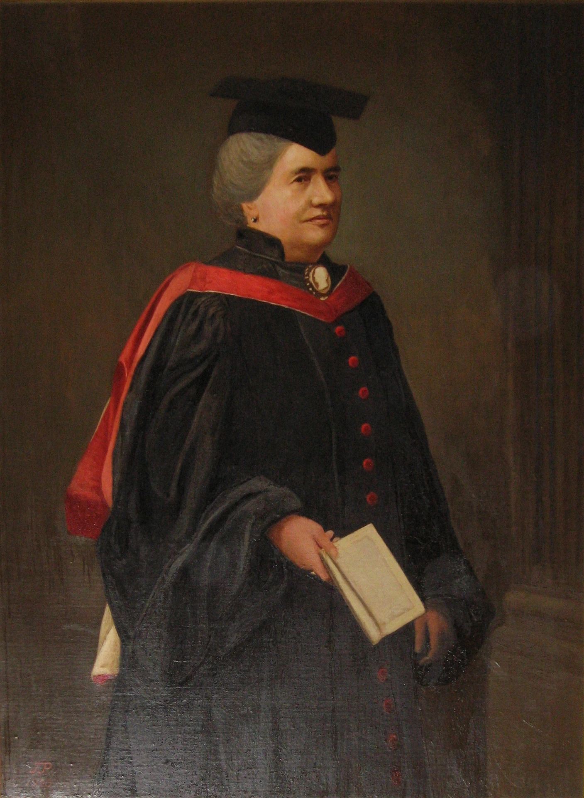
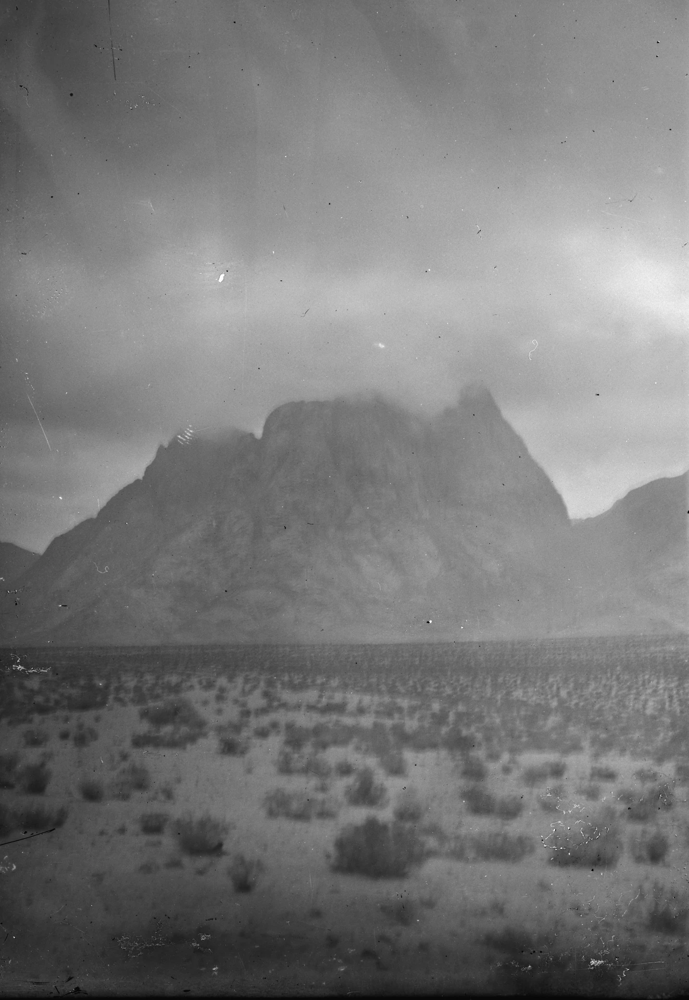
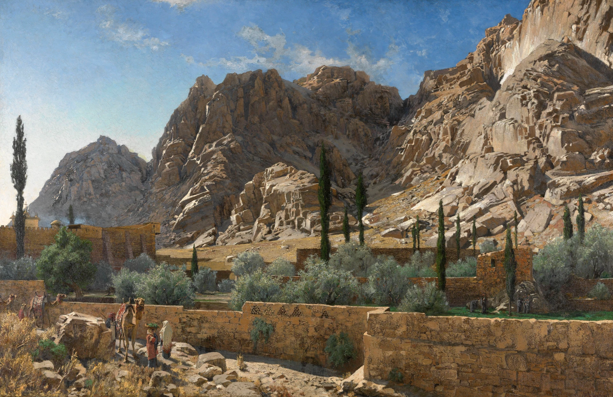
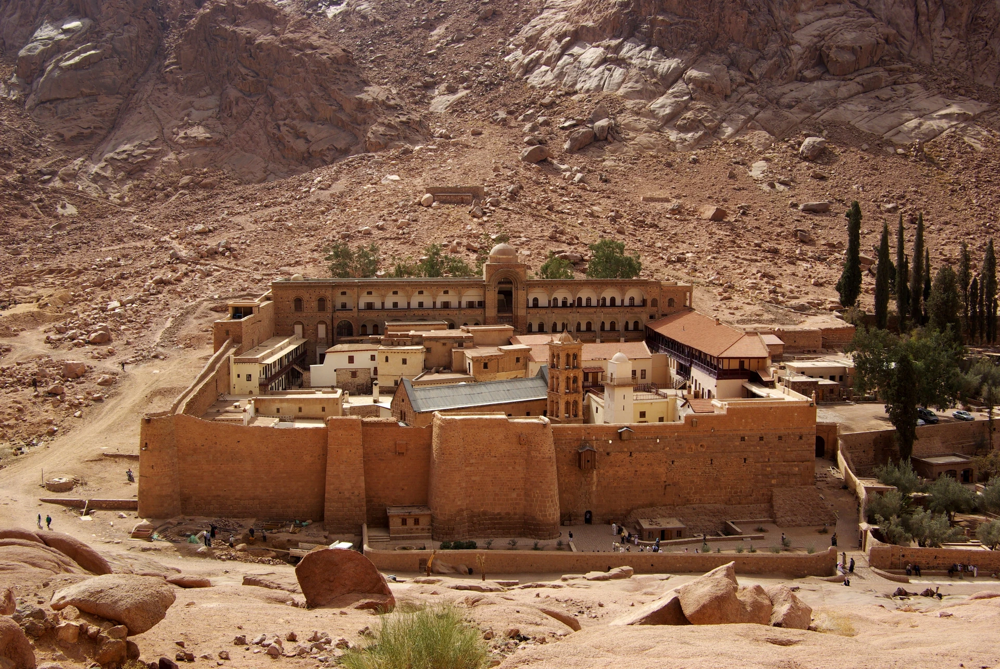
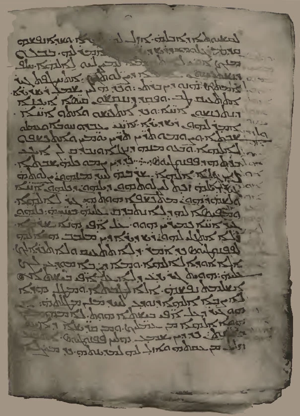
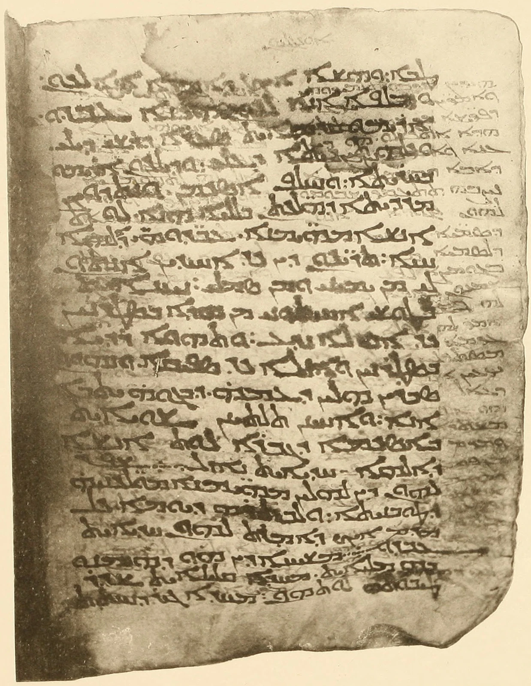
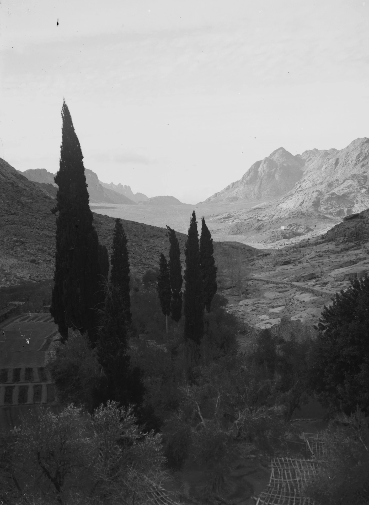
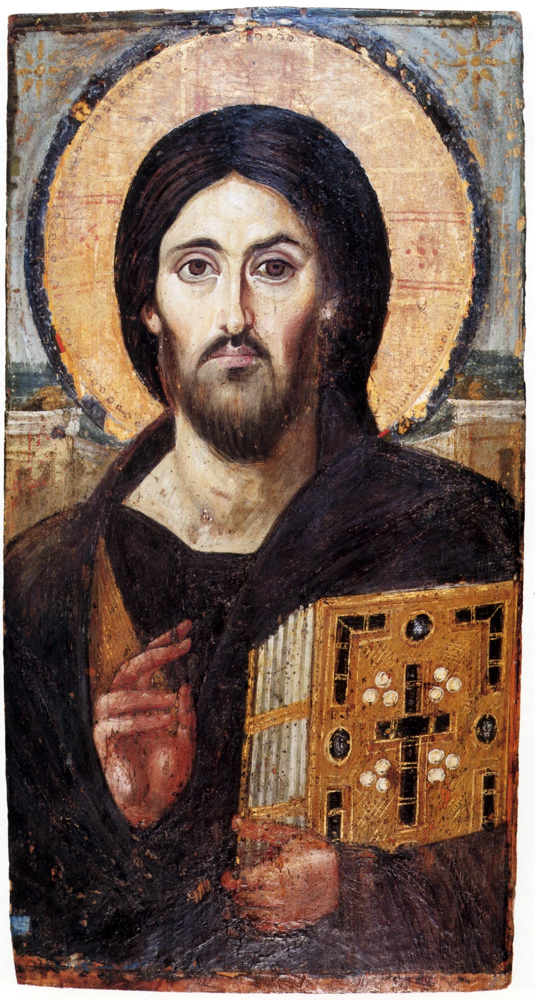
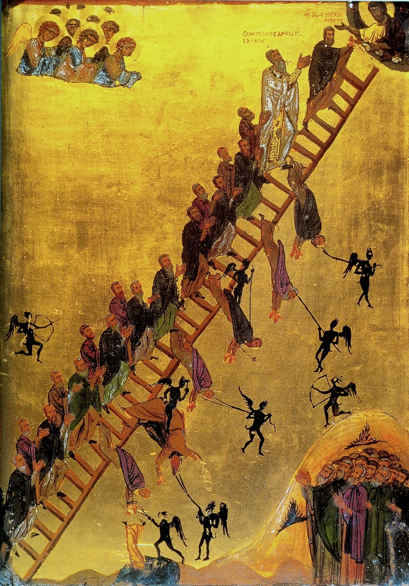

아직 펼치지 않은 카드흩어지고 사라질 뻔한 책 · 1시나이의 쌍둥이 자매책 한 권 아래에 더 오래된 글씨가 숨어 있었어요. 이 사람은 무엇을 찾아냈을까요?책장 밑에 지워진 글씨가 숨어 있었대! 무슨 글씨였을까?
1892년 1~3월이집트 시나이반도 · 성 카타리나 수도원
시나이의 쌍둥이 자매
130여 년 전 겨울, 쉰을 앞둔 스코틀랜드의 쌍둥이 자매가 낙타를 타고 사막을 건넜어요. 자매와 함께 사막의 수도원으로, 그리고 촛불 없이는 아무것도 보이지 않던 도서관의 어두운 벽장 앞으로 가 봐요. 촛불로 책장을 비추며, 진한 글씨 아래 숨은 옛 글씨를 찾아보세요.
아주 옛날, 쌍둥이 자매가 낙타를 타고 사막을 건넜어. 사막 한가운데 있는 수도원에서 보물 같은 책을 찾았대. 우리도 같이 가 볼까?
검수 전 시안이에요(기준서 1판). 장면에는 자매가 남긴 책(1893년 『How the Codex Was Found』, 1894년 아그네스의 복음서 번역)과 확인한 자료에 있는 것만 옮겼고, 상상은 ‘눈 감고 상상해 보기’에만 썼어요. 따옴표 속 자매의 말은 저작권이 끝난 영어 원문을 이 안내서가 우리말로 옮겼어요.
시안 확인용카드 단계 미리 보기
1
길
1892년 1월 28일 목요일, 쉰을 앞둔 스코틀랜드의 쌍둥이 자매 아그네스와 마거릿이 배로 수에즈만을 건너요. 약속한 낙타들은 두 시간이나 늦게 나타났어요. 아그네스는 한 해 전에 남편을 잃었고, 마거릿도 여섯 해 전에 남편을 먼저 보냈어요.
시나이산 기슭의 수도원까지는 낙타로 아흐레쯤. 자매는 일요일에는 쉬겠다고 미리 말해 두었고, 첫 일요일을 와디 가란델 골짜기에서 보냈어요. 예부터 성경 속 ‘엘림’, 곧 광야를 걷던 이스라엘 백성이 샘물과 종려나무를 만난 곳으로 여겨진 골짜기예요(출애굽기 15장 27절).

사진은 20세기 초, 눈보라 치는 시나이산이에요. 자매도 한겨울에 이 사막을 건넜어요.
쌍둥이 자매가 낙타를 타고 아흐레 동안 사막을 건너. 둘 다 사랑하는 사람을 먼저 떠나보낸 뒤였대.
물어보기아주 먼 길을 떠난다면, 누구와 함께 가고 싶어?
2
도착
아흐레 동안 모래와 바위만 보며 걸어온 끝에, 바위산 사이로 높은 돌 성벽이 나타나요.


“마침내 수도원이 눈앞에 나타났다. 좁은 골짜기에 포근히 안긴 채, 담을 두른 정원에 둘러싸여.”
자매의 책 『How the Codex Was Found』(1893)에서 · 이 안내서가 옮김
6세기에 동로마 황제 유스티니아누스가 세운 수도원이에요. 그 뒤로 수도사들이 떠나지 않고 기도해 온, 처음 세운 뜻대로 지금도 쓰이는 가장 오래된 기독교 수도원으로 꼽혀요(유네스코).
‘2010년’을 눌러 오늘의 수도원을 보세요. 높은 성벽 안에 회색 지붕의 주님의 변모 대성당과 종탑, 흰 첨탑이 보여요. 종탑은 1871년에 세웠고 아홉 개의 종은 러시아 황제 알렉산드르 2세가 보냈어요. 자매가 왔을 때는 세운 지 20년쯤 된 새 종탑이었어요. 흰 첨탑은 1106년 무렵 원래 있던 건물을 고쳐 만든 작은 이슬람 사원이에요. 오랜 세월 이 땅의 무슬림 이웃과 함께 지내 온 수도원의 역사를 보여 줘요.
드디어 사막 한가운데 높은 성벽이 보여! 1,400년 넘게 수도사들이 살아온 곳이야.
물어보기‘2010년’을 눌러 봐. 종이 아홉 개 달린 종탑을 찾을 수 있어?
3
어두운 벽장
2월 8일 월요일, 자매는 도서관에서 일을 시작해요. 시리아어 책들은 어두운 벽장 안에 있었어요. 그 벽장에 가려면 그만큼 어두운 방을 하나 더 지나야 했고, 촛불을 켜지 않으면 책이 보이지도 않았어요.
사서 갈락테온 신부가 두툼한 책 한 권을 꺼내 와요. 몇백 년 동안 아무도 넘겨 보지 않은 듯한 책이었어요. 촛불을 들고 책장을 비춰 보세요.
손가락이나 마우스로 문질러 촛불로 책장을 비춰 보세요. 숨은 곳이 세 군데 있어요.

시리아어 시나이 사본 82b쪽 · 위 글은 성녀 에우프로시네 이야기, 아래 지워진 글은 마태복음 1장 · 퍼블릭 도메인 · 위키미디어 공용
빛이 닿으면 숨은 표시가 나타나요.
촛불로 책장을 다 비춰 보았어요. 진한 이야기 아래에 더 오래된 복음서가 숨어 있었어요.
“한 번 흘끗 보는 것만으로, 이 책이 팔림프세스트라는 걸 알 수 있었다.”
아그네스의 글(1894)에서 · 이 안내서가 옮김
팔림프세스트는 옛 글을 긁어내거나 씻어 내고 그 위에 새 글을 쓴 책이에요. 짐승 가죽으로 만든 양피지는 무척 귀했거든요. 위에 쓰인 글은 여성 성인들의 삶을 적은 이야기였고, 이 쪽은 성녀 에우프로시네의 이야기예요.
아그네스는 “280쪽이 넘도록 여백을 훑어 내려가는 동안, 내가 읽어 낼 수 있었던 낱말은 모두 복음서에서 나온 것이었다.”라고 적었어요(1894 · 이 안내서가 옮김). 지워진 글씨는 4세기 말에서 5세기 초 무렵에 옮겨 쓴 시리아어 복음서였어요. 이 쪽에는 마태복음 1장이 있어요. 시리아어로 된 복음서 가운데 가장 오래된 사본으로 꼽혀요.
촛불을 움직여 봐! 진한 글씨 사이로 희미한 글씨가 보이지? 그게 예수님 이야기가 담긴 복음서래.
물어보기숨어 있던 글씨를 처음 발견했다면, 뭐라고 외쳤을까?
4
수도원에서 보낸 한 달
오래 붙어 있던 책장은 조금만 힘을 줘도 바스러졌어요. 자매는 그 가운데 여섯 장쯤을 캠핑용 주전자의 김에 쐬어 살살 떼어 냈어요.
마거릿이 무거운 책을 붙들고 한 장씩 넘기면 아그네스가 사진기를 눌렀어요. 그렇게 358쪽을 모두 찍었어요.
수도사들은 하루 스물네 시간 동안 여덟 번이나 노래로 예배를 드렸어요. 아래 단추로 정교회의 비잔틴 성가를 들어 보세요. 자매는 정원 우물 곁에 천막을 치고 지냈는데, 밤이면 천막 안이 영하로 떨어졌어요.

“떨어진 아몬드 꽃잎이 깔린 땅은, 마치 눈이 내려앉은 듯 빛났다.”
자매의 책(1893)에서 · 이 안내서가 옮김
달 밝은 밤, 사이프러스와 올리브, 꽃이 핀 아몬드 나무가 있는 수도원 정원을 보며 적은 말이에요.
이듬해 학자들과 다시 왔을 때, 갈락테온 신부는 아그네스를 어머니처럼 여긴다고 말했어요(자매의 책).
붙은 책장을 주전자 김으로 떼어 내고 한 장씩 사진을 찍었어. 수도사들은 하루에 여덟 번이나 노래로 기도했대.
물어보기하루에 여덟 번 노래로 기도한다면, 어떤 노래를 부르고 싶어?
5
방명록에 남긴 한 줄
떠날 무렵, 아그네스는 수도원 방명록에 두 사람의 이름을 적고 그 옆에 한 줄을 덧붙였어요.

“섬기는 모습은 여러 가지여도, 성령은 같다.”
아그네스가 방명록에 쓴 말 · 자매의 책(1893)에서 · 고린도전서 12장 4~5절을 빌렸어요
자매는 장로교인이었고, 수도사들은 그리스 정교회 사람들이었어요. 예배하는 모습은 달라도 같은 성령 안에 있다는 뜻으로 읽혀요(고린도전서 12장).
3월 8일 화요일 아침, 자매는 수도원을 떠나요. 그리고 이듬해 케임브리지의 학자들과 함께 다시 와서, 지워진 글씨를 한 자 한 자 옮겨 적어요.
떠나기 전에 방명록에 ‘모습은 달라도 같은 성령’이라고 적었대. 서로 다른 교회 사람들이 친구가 된 거야.
물어보기나와 다른 친구에게 한 줄을 남긴다면, 뭐라고 쓰고 싶어?
눈 감고 상상해 보기
촛불 하나만 켠 좁은 방이에요. 유리 없는 창으로 사막의 찬바람이 들어와요. 손에 든 양피지는 천 년도 더 지난 것이에요. 촛불을 가까이 대자, 위의 글씨 사이로 아주 희미한 옛 글씨가 비쳐 보여요. 그 글씨가 복음서라는 걸 알아본 순간을 가만히 떠올려 보세요.
눈을 감아 봐. 촛불 하나, 찬바람, 아주 오래된 책. 희미한 글씨가 복음서라는 걸 처음 알아챈 순간이야.
나의 자리
내 삶에도 ‘지워진 글씨’처럼 아래에 숨은 오래된 이야기가 있을까요?
연필로 쓰고 지운 자국을 본 적 있어? 거기 뭐라고 썼는지 보일까?
마음에 닿는 한 줄을 고르거나 직접 써 보세요. 한 줄을 남기면 이 자리의 도장이 찍혀요. 이 기기에만 저장돼요.
더 깊이
궁금한 칸만 펼쳐 읽어도 괜찮아요.
알고 보면
팔림프세스트 양피지는 짐승 가죽으로 만들어 무척 귀했어요. 그래서 옛 글을 긁어내거나 씻어 내고 그 위에 새 글을 쓰기도 했어요. 이렇게 두 번 쓴 책을 팔림프세스트라고 해요.
위에 쓴 사람 아그네스가 읽어 낸 기록에 따르면, ‘베트 마리 카디시’의 은수자 요한이 양피지가 모자라 옛 시리아어 복음서 한 권을 뜯어서 그 위에 여성 성인들의 이야기를 썼어요. 쓴 해는 처음에 697년으로 읽었다가, 나중에 778년으로 바로잡았어요.
이듬해 1893년, 자매는 케임브리지의 벤슬리 교수 부부, 버킷 부부, 렌들 해리스와 함께 다시 왔어요. 학자들이 쪽을 나눠 맡아 지워진 글씨를 읽어 냈어요. 누가 발견의 공을 가져야 하느냐를 두고 서운한 일도 있었다고 해요.
또 하나의 발견 1896년, 자매는 카이로에서 사 온 낡은 히브리어 종이 몇 장을 케임브리지의 학자 솔로몬 셰크터에게 보여 주었어요. 셰크터는 그 가운데서 구약 외경 『집회서』(벤 시라)의 히브리어 사본 조각을 알아봤어요. 이것이 실마리가 되어, 카이로 옛 회당의 창고(게니자)에 쌓여 있던 문서 약 19만 점이 케임브리지로 옮겨졌어요.
학위 그때 케임브리지 대학은 여성에게 학위를 주지 않았어요. 대신 독일 할레 대학(1899)을 시작으로 세인트앤드루스, 하이델베르크, 더블린 대학이 명예박사 학위를 주었어요. 하이델베르크 대학이 여성에게 준 첫 신학 박사 학위였다고 해요.
횃불을 넘겨주리라 자매는 케임브리지에 장로교 신학교인 웨스트민스터 칼리지를 세우는 데 땅과 큰돈을 내놓았어요. 1897년 머릿돌을 놓고, 1899년 문을 열었어요. 자매의 집 문 위에는 ‘횃불을 넘겨주리라(lampada tradam)’라는 라틴어 글귀가 있었어요.
그리스도인들은 이렇게 읽어요


그리스도인들은 성경이 처음부터 여러 언어로 옮겨지며 퍼졌다고 봐요. 시리아어는 예수님과 제자들이 쓰던 아람어의 한 갈래예요. 그래서 이 사본은 초기 교회가 복음서를 어떻게 읽었는지 보여 주는 귀한 창으로 여겨져요.
시나이는 성경에서 ‘하나님을 만난 산’의 전통이 이어지는 곳이에요. 수도원은 모세가 하나님의 말씀을 받은 산으로 전해지는 시나이산 기슭에 있고, 수도원의 떨기나무 경당은 모세가 불타는 떨기나무를 본 자리로 전해져요. 7세기에 이 수도원의 원장이던 요한 클리마쿠스는 수도사의 삶을 하늘로 오르는 서른 개의 계단에 빗댄 책 『하늘에 오르는 사다리』를 썼어요. 수도원에는 이 책을 그림으로 옮긴 12세기 이콘이 남아 있어요.
그리고 이 이야기는 서로 다른 교회의 사람들이 함께 옛 말씀을 지켜 낸 이야기로도 읽혀요. 장로교인 자매와 정교회 수도사들, 그리고 오랜 세월 수도원 곁에 살아온 무슬림 이웃까지요.
성경에서 이어 읽기
말씀은 뜻만 옮기고, 본문은 대한성서공회 개역개정으로 이어 드려요.
지금 그 자리
확인한 날 · 2026년 11월 17일 · 바뀌기 쉬운 정보라 정기적으로 다시 확인해요
수도원과 둘레 지역은 2002년 유네스코 세계유산(성 카타리나 지역)이 되었어요. 도서관은 바티칸 다음으로 옛 사본을 많이 가진 곳으로 꼽혀요.
수도원 공식 안내에 따르면 보통 오전 9시부터 11시 30분까지 들어갈 수 있고, 금요일과 일요일, 큰 정교회 축일에는 문을 닫아요.
2025년 5월 이집트 법원이 수도원 땅을 둘러싼 소송에서 판결을 내리자, 수도사들이 항의의 뜻으로 방문객을 받지 않았다는 보도가 있었어요. 2026년 10월 그리스 정부는 수도원과 이집트 정부가 합의에 이르렀다고 발표했어요(10월 말 기준 아직 서명 전). 가기 전에는 꼭 최신 소식과 공식 안내를 확인하세요.
도서관의 지워진 글씨들은 2011년부터 특수 촬영으로 되살리고 있어요. 160개가 넘는 팔림프세스트에서 열 가지 언어의 지워진 글이 드러났고, 연구용 누리집에서 볼 수 있어요.
징검다리 · 더 보고 싶다면
- 대한성서공회 「성서의 땅을 찾아서」 ‘시나이산’ 한국어 · 회원 로그인
- 대한성서공회 「성서의 땅을 찾아서」 ‘광야’ 한국어 · 회원 로그인
- 자매의 여행기 『How the Codex Was Found』 소리책 영어 낭독 · 2시간 28분 · LibriVox 무료
- 같은 책 원문(1893) 영어 · 인터넷 아카이브
- Atlas Obscura ‘How Lady Bible Hunters Made the Victorian Era’s Most Stunning Scriptural Find’ 영어 기사
- 성경 박물관 ‘The Sisters Who Went to Sinai’ 영어 · 짧은 글
- 시나이 팔림프세스트 프로젝트 영어 · 되살린 글씨 보기
- 재닛 소스키스, 『The Sisters of Sinai』(2009) 영어 책 · 한국어판은 찾지 못했어요
조심할 점
‘예수님이 쓰신 말 그대로’라고 하지 않아요. 시리아어는 아람어의 한 갈래이지만, 예수님이 쓰신 갈릴리 지방의 아람어와 똑같지는 않아요.
같은 수도원에서 나온 ‘시나이 사본’(티셴도르프가 가져간 그리스어 성경)과는 다른 책이에요. 언어도, 찾은 사람도, 지금 있는 곳도 달라요.
수도원 땅 문제는 아직 이어지는 일이에요. 어느 한쪽을 탓하지 않고 확인된 사실만 옮겼어요.
이 사본에는 마가복음의 마지막 열두 절(16장 9~20절)이 없어요. 아주 오래된 그리스어 사본 몇 권도 같아서 사본 연구에서는 널리 알려진 사실이지만, 처음 만나는 분께 꼭 필요한 내용은 아니라 여기에만 적어 둬요. 교회마다 이 부분을 설명하는 방식이 다를 수 있어요.
촛불로 찾은 세 곳 금박
‘어두운 벽장’에서 촛불로 책장의 숨은 세 곳을 모두 찾으면 카드에 금박이 입혀져요.
촛불로 책장의 세 곳을 끝까지 비춰 보기
수도원의 노래 채색
둘 가운데 하나만 해도 카드가 채색돼요.
‘수도원에서 보낸 한 달’에서 비잔틴 성가 듣기
아이와 함께 ‘영화처럼 보기’를 끝까지 보기
근거 보기 (20)
- Margaret Dunlop Gibson, 『How the Codex Was Found: A Narrative of Two Visits to Sinai from Mrs. Lewis’s Journals 1892–1893』(1893) · 인터넷 아카이브 — 1월 28일 낙타 두 시간 늦음, 와디 가란델(엘림)의 일요일, 어두운 벽장과 촛불, 주전자 김, 358쪽, 하루 여덟 번의 예배, 천막 안 영하, 아몬드 꽃잎, 방명록의 말, 3월 8일 화요일, 이듬해 갈락테온 신부의 말·벤슬리·해리스·버킷
- Agnes Smith Lewis, 『A Translation of the Four Gospels from the Syriac of the Sinaitic Palimpsest』(1894) · 인터넷 아카이브 — 팔림프세스트임을 알아본 일, 280쪽이 넘는 여백
- Wikipedia: Agnes Smith Lewis and Margaret Dunlop Gibson
- Wikipedia: Agnes Smith Lewis (남편 사뮤얼 루이스 1891년 세상을 떠남)
- Wikipedia(독일어): Agnes Smith Lewis · 명예박사 연도
- Wikipedia: Syriac Sinaiticus
- Wikipedia: Saint Catherine’s Monastery
- 성 카타리나 수도원 공식 안내: General Information
- 성 카타리나 수도원 공식 안내: Catholicon of the Transfiguration
- Cambridge Past, Present & Future: Agnes Smith Lewis & Margaret Dunlop Gibson
- Books & Culture(2010): Synoptic Sisters
- History of Information: 카이로 게니자의 발견
- History of Information: 존 페디가 그린 자매의 초상(웨스트민스터 칼리지 소장)
- 케임브리지 대학 도서관 『Genizah Fragments』 61호(2011)
- Sinai Palimpsests Project: About
- UNESCO 세계유산: Saint Catherine Area
- Patrick Comerford(2025.6.3): 수도사들이 문을 닫다
- EWTN News(2025.6.6, 2025.9.26 고침): 수도원 문을 닫다
- Athens News(2026.10.25): 수도원 합의 발표
- 대한성서공회 개역개정 본문
그림·사진·소리 출처
- 사진: 아메리칸 콜로니 사진부 · 퍼블릭 도메인(미국 의회도서관 매슨 컬렉션, 알려진 저작권 제한 없음) · 위키미디어 공용
- 그림: 아돌프 폰 메켈 · 벨기에 헨트 미술관 · 퍼블릭 도메인 · 위키미디어 공용
- 사진: Berthold Werner(2010) · CC BY-SA 3.0 · 위키미디어 공용
- 위 글은 성녀 에우프로시네 이야기, 아래 지워진 글은 마태복음 1장 · 퍼블릭 도메인 · 위키미디어 공용
- 아그네스 스미스 루이스의 1896년 책에 실린 사진 · 퍼블릭 도메인 · 위키미디어 공용
- 사진: 아메리칸 콜로니 사진부 · 퍼블릭 도메인(미국 의회도서관 매슨 컬렉션, 알려진 저작권 제한 없음) · 위키미디어 공용
- 사진: 아메리칸 콜로니 사진부 · 퍼블릭 도메인(미국 의회도서관 매슨 컬렉션, 알려진 저작권 제한 없음) · 위키미디어 공용
- 이콘 · 시나이 성 카타리나 수도원 · 퍼블릭 도메인 · 위키미디어 공용
- 이콘 · 시나이 성 카타리나 수도원 · 퍼블릭 도메인 · 위키미디어 공용
- 존 페디 그림, 「아그네스 스미스 루이스」 · 퍼블릭 도메인 · 위키미디어 공용
- 소리: 비잔틴 성가(정교회 전통 성가) 녹음 · CC0 · 위키미디어 공용 · 시나이에서 녹음한 것은 아니에요
‘처음 만나는 기독교 문화’의 깊은 카드예요. 카드 단계와 남긴 글은 이 기기에만 저장돼요.